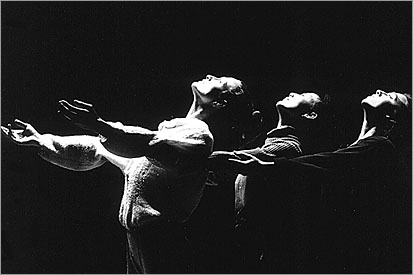
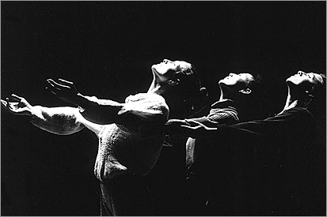

Most of us are second language learners of ASL. When we first learned signs we focused on what to do with our hands. We also learned that the face was used to show the emotion behind a sign, for grammatical purposes and to modify nouns and verbs, but most of our energies at first were focused on handshapes, placement on the body, and movement. As we grew in our knowledge, we realized that it was time to incorporate other parts of the body into our communication. Let us consider the use of head, eyebrows, eyes, nose, mouth, shoulders, and torso in expressing semantic and syntactic intent.
I found the following article from the March/April, 1997 issue of Psychology Today quite fascinating. It's title is "Let your fingers do the talking" by Hillary Haley:
There are books and videotapes that will be of help to you. Gil Eastman has written a book called From mime to sign. (For this and other works mentioned see resources below for full reference and link.) It deals with how the body can be used to augment signs in ways that can be thought of as gestural. MJ Bienvenu collaborated with Betty Colonomos in a series called The Face of ASL. They are videotapes by Sign Media Inc and deal with the following topics: Basic Declarative Sentences; Basic Questions, Conditional and Relative Clauses; Complex Sentences. Non-manual grammar is dealt with extensively in: Charlotte Baker and Dennis Cokely. 1980. American Sign Language: a teacher's resource text on grammar and culture. Silver Spring, MD: T.J. Publishers, Inc. It is also useful to watch videotapes of skilled signers and focus on a specific body aspect of their signing: copy sign them or look for nuances. Watching native signers in this way bears repeated watching. Here is a more extended list:
 Bahan, B. (1996) Non-Manual realization of agreement in American Sign Language. Doctoral dissertation, Boston University, Boston, MA.
Bahan, B. (1996) Non-Manual realization of agreement in American Sign Language. Doctoral dissertation, Boston University, Boston, MA.
Bahan, B., J. Kegl, R.G. Lee, D. MacLaughlin, and C. Neidle. (2000) The licensing of null arguments in American Sign Language. Linguistic Inquiry 31:1,
1-27.
Baker-Shenk, C. and D. Cokely. (1991)
American Sign Language : A teacher's resource text on grammar and culture. Clerc. ISBN: 093032384X.
Bienvenu, MJ & Colonomos, B. The face of American Sign Language. Designed by MJ Bienvenu and Betty Colonomos, these tapes instruct students how to develop non-manual signals and markers in ASL. Descriptions and demonstrations of facial behavior in context and practice exercises are included on each tape. (Set of four videotapes: Basic declarative sentences; Basic questions, Conditional and relative clauses; Complex sentences.) Sign Media Inc.
Bridges, B. & Metzger, M. (1996). Deaf tend your: Non-manual signs in ASL. Book: 67 pages (Calliope Press); soft cover. VHS: 30 minutes; closed captions; ASL with English voice-over. This work focuses on mouth movement in greater depth than other works of its kind, surveying 50 different categories.
Cagle, K. 1000 ASL faces WWWorkshop. Select the title in one of the drop-down boxes below and click on "go". For a sample of this CD, see 1000 ASL faces - Closed lip expressions.
Eastman, G. (1989)
From mime to sign. Silver Spring, MD: T.J. Publishers, Inc. ISBN 0932666345.
Givens, D. B. (2002). The nonverbal dictionary of gestures, signs, and body language cues.
Guth, D. L. (2001). Pantomime: A solid base for interpreters. Signs of Development, Inc.
Hoza, Neidle, MacLaughlin, Kegl, and Bahan, A unified syntactic account of rhetorical questions in American Sign Language
International bibliography of sign language. Click on "nonmanual aspects of Sign Language" or "nonverbal communication/body language".
Lawless, L. K. Gestes français - French gestures.
Lazzari, N. Facial expressions. Deaf instructor gives a clear presentation of the importance of facial expression in ASL. Signed in ASL and voiced with on-screen text.
Lee, Neidle, MacLaughlin, Bahan, and Kegl, Role shift in ASL: A syntactic look at direct speech.
Masip, J. Online papers on nonverbal behavior. Very extensive list of links to: essentials researchers, books, papers, abstracts, publication lists, journals, videotapes, research centers, online experiments, and notation systems.
Massoud, L. L. (1991)
Communicating beyond the words: Using non-verbal and non-manual clues in English and American Sign Language. SignQuest Publishers, Inc. ISBN: 1878819046
Neidle, C., J. Kegl, B. Bahan, D. Aarons, and D. MacLaughlin.
(1997) Rightward wh-movement in American Sign Language. In D. Beerman, D. LeBlanc, and H. van Riemsdijk (eds), Rightward movement. Amsterdam: John Benjamins, 247-278. ISBN: 1556(199015. [errata]
Neidle, C., D. MacLaughlin, J. Kegl, and B. Bahan (August 1996)
Non-Manual correlates of syntactic agreement in American Sign Language
Report No. 2, American Sign Language Linguistic Research Project. Boston, MA: Boston University. [abstract]
Neidle, C., D. MacLaughlin, R.G. Lee, B. Bahan, and J. Kegl (1998) The rightward analysis of wh-movement in ASL: A reply to Petronio and Lillo-Martin.
Neidle, C., D. MacLaughlin, R. G. Lee, B. Bahan, and J. Kegl (1998)
Wh-questions in ASL: A case for rightward movement. Report No. 6, American Sign Language Linguistic Research Project. Boston, MA: Boston University. [abstract]
Pelachaud, C., N. Badler, and M. Viaud (1994) Final report to NSF of the standards for facial animation workshop. University of Pennsylvania, School of Engineering and Applied Science, Computer and Information Science Department, Philadelphia, PA 19104-6389. [See especially "Properties and attributes of faces".]
Petitto, L. (1986) From gesture to symbol: The relationship between form and meaning in the acquisition of personal pronouns in American Sign Language. Indiana University Linguistics Club.
Amazon.com.
Signing online. Glossary: Facial expressions.
Struxness, K. (1996). Mouth morphemes in American Sign Language. Order this videotape from DeBee Communications, Inc., 6965 El Camino Real, Suite 105, Carlsbad, CA 92009.
The face
We will first discuss the overall affective feature of the face, that is, emotional display, reserving the body aspects of eyebrows, mouth, nose, cheeks, teeth and tongue). In spoken English, emotions are shown through vocal intonation (emphasis, quavering voice, breathiness, bounciness, growling quality) and pausing (tentativeness, just before an emphasis). There are different ways that people interact depending on their relative status or degree of intimacy (register.)
In Mainstream American Hearing Culture it is acceptable to show your emotions if you have or wish to establish a close relationship with your audience. For more formal settings one shows one's emotions only through word choice ("I was astounded by this admission on the part of the accused"), mild gestures, some vocal inflection (mainly pausing, stretching out words, and slight increases in volume), or irony ("How charitable of you to leave him there to die"). One does not use facial expression, excessive gestures, loud speech, or distorted voice patterns, which are seen as lowbrow. Lack of appeal to emotion is supposed to show objectivity. Preaching is one formal setting where emotions can be displayed and they increase in fervency as you go across the scale from Catholic to Protestant. In Black churches, even more fervency is required and is perfectly acceptable. This is also evidenced in political speakers and a union of this is found in civil rights leaders like Martin Luther King and Jesse Jackson.
ASL is a visual language and delights in showing nuances of the speaker's reaction or those of the characters in a story. In English a speaker might say, "There is a disproportionate number of male executives in the work force" and yet say nothing explicit about his/her reaction. This is contrary to the "structure/culture" of ASL. We are more likely to see something like:
WORKER (<) MALE, (>) FEMALE.
BALANCE-HIGHER-ON-lf, (1h)WHAT'S-UP* INDEX-lf hand?
BALANCE-HIGHER-ON-lf------------------------------------------------->
If we can surmise what the emotions involved are, we must represent it, although the English might not state it explicitly. The "emotion" is implicit in the word choice "disproportionate" and knowledge of the background or perspective of the speaker, if known. This need for representation of the feelings of the speaker or "characters" in the text (metanotative force) is one use of the face we need to incorporate or enhance in our interpretations.
English has a rich number of synonyms in its lexicon that shows degree of intensity or other nuances: happy, ecstatic, joyful, exultant, and so on. ASL has less synonyms and shows nuances by facial expressions as well as the intensive (*) whereby the sign is executed at first slower than usual and then the final portion of the motion is speeded up and the total path of the motion may be shortened: HAPPY, HAPPY*. If your face is not in agreement with the sign (neutral or sad face with HAPPY, the message may become skewed or unclear. All languages have redundancy as a feature. In the sentence "Yesterday I went to school", the past tense of "go" (went) shows that the action happened in the past, but "Yesterday" also shows it happened in the past. If you were to say "*1 Yesterday I go to school", the meaning would be clear, but the ear would catch on the lack of the usual redundancy and the hearer may miss the next few sentences because of the unexpected ungrammaticality. If you sign,
neutral face
*1 MOTHER, FATHER DIVORCE, ME MAD*2------->.
the same thing happens. Furthermore there is the confusion you might get if someone's words (in English) were chewing you out, but there vocal intonation was totally blase and their body language was slouched as if s/he weren't really invested in what they were saying. I remember interpreting for a teacher whose face was totally passive while he chewed the class out for their poor performance on a test, and because of the metanotative impact of what he was saying, I looked furious while I was signing. The deaf student looked at the teacher's face and then at mine and looked puzzled how I could be accurately interpreting what was going on.
The eyes
Spatialization, setting up where an object is placed in relationship to other objects in real space or to refer to later, is usually done by indexing with the [1] handshape or the tips of the upturned [B] for honorific indexing ("G-d" , "this esteemed gentleman/lady", or "yours truly") or by the use of classifiers:
___________________________t _____________________pl
P-I-P-E (2h)C-CL'elbow pipe', PLUMBER C,S-CL'twist at joint'.
It is important to have eye gaze agreement with this. In less formal settings and close proximity, the spatialization may happen with eye gaze only. And if a Deaf person wants to refer to someone who is present without drawing attention to him/herself by pointing, the eyes may repeated move towards the intended party while the mouth forms "looklooklooklooklook".
For directional verbs (you-GIVE-TO-me, me-GIVE-TO-you, he-GIVE-TO-her) the eye gaze should follow the flow of the action. For distributive aspect (INFORM"all", INFORM"each"), the eyes should sweep across for "all" and rest on the direct objects individually for "each". Finally for direct discourse, where a conversation is going on, not only should there be torso twisting but also the person quoted should be gazing from their spatialized location to that of the person/people s/he is speaking to. Deaf people do check in with their audience from time to time to monitor for comprehension and indirect discourse ("My Mother told me she was hungry" as opposed to "My Mother said, 'I'm hungry'") is rarely used in ASL.
Since eye gaze is used to identify speakers during dialogue, it would be appropriate to discuss interpreting indirect discourse. Since ASL does not use indirect discourse, when interpreting from English, the reported conversation must be changed to direct discourse. For example,
In the Volvo he asked them if they'd like to go to the Zoo and they shook their heads firmly. On the last two Sundays he'd taken them to the Zoo, Susie reminded him in her specially polite, very quiet voice: one gets tired of the Zoo, walking round and round, looking at all the small animals. She smiled to show she wasn't ungrateful. She suggested that in a little while, after a month or so, they could go to the Zoo again, because there might be some new animals. Doris said that there wouldn't be, not after a month or so: why should there be? "Some old animals might have died," Susie explained.3
This would have to be switched in the ASL to reflect the following reworking into direct discourse:
In the Volvo he asked, "Would you like to go to the Zoo?" and they shook their heads firmly. "On the last two Sundays you've taken us to the Zoo," Susie reminded him in her specially polite, very quiet voice. "One gets tired of the Zoo, walking round and round, looking at all the small animals." She smiled to show she wasn't ungrateful. She suggested, "In a little while, after a month or so, we could go to the Zoo again, because there might be some new animals." Doris said, "There wouldn't be, not after a month or so: why should there be?" "Some old animals might have died," Susie explained.
The underlined portions show where the changes need to occur.
When new interpreters first start working, they often stare fixedly at their consumer, not knowing what else to do with their eyes. This makes the consumers feel like they must watch the interpreter every second to be polite. Actually there are may vital things that the eyes should be doing, as we shall discuss. When there are lengthy pauses in the text for what ever reason, the interpreter should look down or away from the consumer so as to signal that now is a good time for an eye break and an opportunity to check out the environment. Also take care not to single out the deaf person; if the speaker says to the audience, "Do you know the answer?", don't use the singular form of YOU. As with hearing people, eye gaze shows who the floor is being yielded to. Use your eye gaze to show who is being given a turn, or if a person is just taking it, make sure you indicate with your eyes as well as a simple identifier who is the next speaker.
We have mentioned register as something that shows relative status or degree of intimacy. It also determines eye gaze. In formal register, the eye gaze of a Hearing speaker will general scan the audience without resting on anyone or even look over the heads of the people altogether. With Deaf people, the eye gaze may rest on people who have high social status or are friends of the speaker. For an interpreter, it is hard to determine who would be gazed at, but it is definitely a violation of register to check-in only with the deaf person or people. It is better to sweep the audience. With consultative register (expert to one or more people who are clients in some fashion) there is a bit more eye contact, and the eye contact is more frequent as the register become more and more familiar.
Just as Hearing people pay more attention to auditory phenomena and report it more in their speech acts than Deaf people, eye behavior is reported and dwelt on more by Deaf people. There are three ways to report eye behavior: an F-CL, a V-CL and a 4-CL. Sometimes eye behavior may be demonstrated without recourse to classifiers, that is by moving ones eyes without using one's hands for emphasis, but this is rare. An F-CL is used when the eyes move while the head remains static or largely so, and a V-CL is used when there is significant head movement. A 4-CL is used when many eyes move together.
Leveling (my term, there may be a more commonly used one) is used to show people are at different levels in a physical sense (either short term because one is standing on a higher level or long-term because one is taller than the other). It is also used to show differences in status or authority. Using leveling makes it even more clear who is speaking and paints a clearer picture of the dynamics of the situation.
There are two reasons that a reported conversation may be "interrupted" by gazing back at the audience: an aside or checking in. An aside is a comment in the middle of a reported conversation: "My friend said, 'You've got to pray about it.' (He's a fundamentalist.) I told him, 'I'm not into that prayer thing.'" The body would shift one way to quote the friend, look at the audience to say the aside in parentheses, and shift the other way to quote me. Checking in happens when the speaker wants to check for the comprehension of the listener(s). It could happen in the middle of the conversation if something that the listener(s) may not understand comes up or might be missed, such as fingerspelling.
Fingerspelling is sometimes accompanied by eye gaze. It is partly style, but if a word is especially difficult, the signer usually gazes at the hand to draw attention to the spelling. The sender may also pause and look at receiver(s) to see if repetition is necessary. The hand may also be indexed by the non-dominant hand if the concept behind the word is in question: "What do we mean by the word 'handicap'?"
H-A-N-D-I-C-A-P'hold P while indexing it with NDH'
INDEX-"P"++ "WHAT"?----------->
Even more elaborately the non-dominant [B] hand may be held palm up under the spelling. This is very stylized and is more appropriate for formal register or artistic performance. A Hearing speaker sometimes mulls over how to spell it aloud. For example before writing "en passant (a chess term)" on the board, a Hearing speaker may say to himself in a low voice: "'e', 'n', 'p', 'a', 's', 's'. . ."; a Deaf person may actually turn the fingerspelling so that the palm faces them and watch the spelling to see if it "looks right" the way hearing people might write down a word to see if it "looks right".
The eyes are widened for various semantic or emotive reasons. Sometimes the sign demands that the eyes widen (or open from a closed position), sometimes the eye-widening is exaggerated. Examples are: SURPRISED, AMAZED, SHOCKED, WAKE-UP and WIDE-AWAKE. Sometimes the eyes squint along with clenched teeth or with the non-manual signals we shall discuss such as cs, intense (sometimes called zz), mm, pow, or pursed lips. The eyes are also squinted for (1) excessive or (2) inadequate illumination or (3) regular flow.
_______________cond
(1) EXPLODE@side HAPPEN, ME V-CL 'look at explosion, pull back while squinting'.
_____cond
(2) ROOM DARK, ME ENTER (2h)V-CL'eyes squint to show darkness'.
__t ___________________________eyes squint
(3) N-F, (2h)S>5-CL'water cascade continuously'.
One last thing to add about eye gaze is that it also shows thinking behavior. When a hearing person stops the discourse and starts to think to themselves (they may even start to talk to themselves aloud: "What was the other thing I wanted to say?") they will typically look anywhere but at their audience: up, down, or to the side. Deaf people do this too, and the interpreter who attempts to become the speaker should also follow this linguistic/psychological phenomenon.
Eyebrows
Eyebrows are used extensively for grammatical purposes. Important markers are topic (t), yes-no question (q), rhetorical question (rhq), wh- question (whq), negative question (nq), head nodding (y), head shaking (n), conditional (cond), and relative clause (rc). Since the usual sign for non-manual markers FACIAL-EXPRESSION: (2h)[1], POs facing each other, FOs up, are held by the sides of the face and alternately ascend and descend while the index fingers are alternately crooked and straightened, can also mean expression used to show emotive value, MJ Bienvenu and Betty Colonomos developed a sign we can gloss as GRAMMAR@eyebrows, that is the sign GRAMMAR is generated close to and on the same level with the eyebrows. Sometimes the sign FACIAL-EXPRESSION@eyebrows is used.
t (topic) English has been characterized as possessing the structure SVO [Subject verb object: "Bob (s) hit (v) the ball (o)"]. ASL's structure has been called "topic, comment" or "focus, comment". During the topic, the eyebrows are raised and the head is brought forward by the neck and tilted back slightly.
___t ___________________pow ________________________hu
BALL, B-O-B HIT-WITH-BASEBALL-BAT*, 1-CL'show path of flyball'.
q (yes/no question) When a question is asked that can be answered with a "yes" or "no", the eyebrows are raised and the head is brought forward by the neck and tilted down slightly. Note the difference from t.
____________________________q
YOU INFORM TEACHER FINISH YOU.
rhq (rhetorical question) A rhetorical question is one that will be answered by the speaker and is not a request for information. The eyebrows are raised and the head is twisted slightly towards the non-dominant side with a slight shaking of the head from side to side.
_______rhq
A-L-B-E-R-T E-I-N-S-T-E-I-N BORN WHERE. GERMANY. CITY CALLED U-L-M.
whq All the question that can not be answered with a "yes" or "no" are called whq because so many of the question words start with "wh": who, what, where, when, why. The eyebrows are lowered, the forehead is "knit", and the head is brought forward by the neck and tilted down slightly. Note the differences between whq and q.
______________t ____________whq
GRADUATE-SCHOOL, YOU FINISH WHEN.
nq When a question is posed negatively: "Aren't you going tonight?" as opposed to "Are you going tonight?", this marker is used. The eyebrows are raised but the tips of the eyebrows (close to the nose) are drawn down, and the head is brought forward by the neck, tilted down slightly, and shaken slightly.
________nq
GO TONIGHT.
y A head nod can be used during a sentence or phrase to emphasize the veracity of the statement. Not only is the head nodded during the relevant portion or whole of the sentence, but the eyebrows are raised. "I really do want to go":
_________________y
ME REALLY-WANT GO.
A single head nod is often found with affirming signs: YES, DEFINITELY, SURE, SAY-#YES-TO.
n A head shake should be used during a sentence or phrase to agree with the fact that the statement is a negative. Sometimes there is no negative word in the statement, only the head-shaking. Not only is the head shaken during the relevant portion or whole of the sentence, but the eyebrows are lowered. "I don't drink coffee."
___________n
DRINK COFFEE.
A single shake of the head, which looks like a twisting to one side without a return to neutral position is found with many negative signs: NOTHING, NOT~HERE, UNNECESSARY, SAY-#NO-TO.
cond A conditional has the form "if…, then", although it may not use those exact words: "If it rains, (then) will you go to the picnic?" The eyebrows are raised and the head tilts towards the dominant side.
cond _____________q
RAIN, GO PICNIC WILL?
rc A relative clause inserts a phrase which could have been stated separately, between the subject and its verb. It often has the structure, "The X, who was Y, did Z" or "The A, that did B, was C". Such as "My mother, who hates religion, wouldn't come to my wedding." The relative clause is shown by moving the head back slightly and rapidly shaking the head.
______________rc ______________n
MY MOTHER, RELIGION DESPISE, COME MY WEDDING.
For more information and exercises that will help you practice these sentence types, it is well worth buying or at any rate watching the videotape - Bienvenu, MJ and B. Colonomos. The face of ASL. (Set of four videotapes: Basic declarative sentences; Basic questions, Conditional and relative clauses; Complex sentences.) Sign Media Inc.
The head (neck)
Aside from head nodding and shaking (y and n, most of the grammatical head movements are subordinate to other parts of the body. Keep in mind the role that the head plays with t, q, rhq, whq, nq, and cond as well. In terms of the gestural uses of the head, it is true of hearing people also that when they feel positive about something (attracted or attentive) their heads (and torsos) move forward, and when they feel negative (repelled or frightened) their heads (and torsos) move backwards. This can be seen in many signs (FASCINATED, INTERESTED, WILLING, SCARED, FEAR, SHOCKED). The signs REALLY-I'M-SURPRISED and ARE-YOU-SURE?! both are made with the index finger making a repeated crooking of the finger like a question mark, but in the first the head is tilted forward and eyebrows up and in the latter the head is cocked to one side and the eyebrows are raised with the tips at the bridge of the nose pulled down. Two signs that require a head nod is THINK-SO (pretty sure), where the sign THINK is modified so that the head is brought down with the index finger still in place, and WITNESS/SEE-FOR-ONESELF, where the index finger is placed beneath the eye and the head is brought down with the finger remaining in position. I have seen the head jerked back and shoulders brought up by some signers with a slight smile as a sort of laugh. Another sign I have observed is the eyebrows are raised and the head is brought forward as in a q and the head is nodded with short jerks and significant pauses between them: "Do you really mean it?"
The shoulders
The shoulders are brought into play for the grammatical markers intense, where the shoulders are brought upwards (this marker will be discussed in more depth at the section on mouth) and cs which was named for the fact that the chin and shoulder are brought closer together. The cs marker is an adjective or adverb that implies that something is close in time. When applied to time signs LAST-WEEK becomes "just last week", LAST-NIGHT becomes "only last night", BEFORE becomes "a little while back", and FUTURE/WILL becomes "in the not too distant future". The marker is an obligatory redundancy with the sign RECENTLY. It can also be used with such verbs as ARRIVE to become "just arrived". Semantically, the shoulders represent a burden, because they have been traditionally been used to carry things so they figure in signs like RESPONSIBLE, TIRED, NOT-MY-FAULT/RESPONSIBILITY, and WEAK. The shoulders may move with these signs especially for emphasis.
The torso
Some of the spatial features brought up with eye gaze can be applied to the torso also: spatialization, directional verbs, and direct discourse. For more formal register and greater distance of your audience from you, the slight head movement is replaced with a twisting of the torso. I have even seen native signers walk to a different place on the stage to spatialize something.
We mentioned before that ASL has less synonyms than English and shows nuances by facial expressions as well as the intensive (*) There is also a movement of the torso that is in agreement with the general movement of the hands: MAD* - twist, HAPPY* - to and fro, SAD* - down. Really the body should move slightly even with the uninflected sign, but the motion is more pronounced with the intensive marker.
The nose
There are two signs I am aware of that use the nose alone. (1) The nose is pulled up by the muscles alongside it, showing the teeth for a few seconds. I call this "negative face" and it is usually backchannel feedback, where the listener is saying "How disgusting/awful!" This may be accompanied by a negative sign. (2) The nose is quickly pulled up twice or in bursts of twos by the muscles alongside it. Sometimes the nose is pulled up once and held, but the teeth are not shown. This is equivalent to "I know what you mean".
The cheeks
puffed cheeks (pc) is used as an adjective for relative thickness or abundance, or magnitude for classifiers that show size and shape:
__________________pc
(2h)C-CL 'thick pipe'
____________________________________pc
(2h)5:-CL 'many people in the audience'
Puffed cheeks is also used redundantly (it doesn't add meaning) with the "every" morpheme for frequency, such as EVERY-DAY, EVERY-WEEK, EVERY-MONTH, and with frequency intensives such as
(_______pc)
THREE-WEEK* = "a full three weeks"
(___pc)
HOUR*++ = "endless hours"
(_____ pc)
EVERY-DAY* DISGUSTING = "every flippin' day".
The mouth and tongue
Sometimes the general sign, FACIAL-EXPRESSION: (2h)[1], POs face each other, FOs up, are held by the sides of the face and alternately ascend and descend while the index fingers are alternately crooked and straightened, is used for ASL mouth movement, but since this can also mean expression used to show emotive value, MJ Bienvenu and Betty Colonomos developed a sign we can gloss as GRAMMAR@mouth, that is the sign GRAMMAR is generated close to and on the same level with the mouth. Sometimes the sign FACIAL-EXPRESSION@mouth is used. Granted that most signers use some English mouth movement, there are also mouth movements that do not represent English.
The mouth is used, of course, to pronounce things, but sometimes with a "Deaf pronunciation": quiche (qweesh), antique (anti-cue). Sometimes English is mouthing accurately without any signing occurring. Usually for humorous effect: "no way", "I don't think so." Three mouth modifiers that are related to English but are altered in a way that English does not permit. (1) The sign HAVE uses the mouth movement "hav", even when it applies to the existence of something: G-D HAVE*. "There is a G-d." (2) The sign LOOK is sometimes accompanied by the mouthing "looklooklooklooklook" to quickly bring the receiver's attention to something. (3) The mouthing sma is used with the sign SMALL for emphasis but it is also used with other signs like LITTLE-BIT (G handshape) and SHORT(-IN-STATURE) as opposed to SHORT-IN-TIME-OR-LENGTH). It can not be used with classifiers that show three-dimensional extension like (2h)F-CL'pipe'.
In general a distinction can be made between body behavior that is modifying and body behavior that is lexical. Modifying means that although this behavior is optional, it is used in this instance to modify the sign in some way, similar to vocal inflection or adjectives and adverbs in English. Lexical means that the behavior is really part of the sign and is not really optional.
Modifying mouthing
brrr - (lips are vibrated by escaping air), used to show the operation of a motor or extreme cold.
___brrr
MACHINE = a whirring machine
cha - (mouth this word to rhyme with Pa), an adjective for a dimension that is sizable for its kind (for classifiers that show size but not shape).
___t ____________cha
BOOK, C-CL'thick book'
elelel - long list, long distance, or too cool.
______________elelel
(2h)4wg-CL'long list'
hu - (lips are puckered and air is sucked in), an adjective or adverb for relative thinness, paucity, smoothness, or ease of execution (for classifiers that show size and shape). Also used for some intensives.
____hu
AWFUL* = catastrophe
intense - (teeth are clenched and shoulders are drawn up) can be added to show intensity or danger.
____________intense
BY-A-HAIR EXPLODE.
mm - (lips are puckered, eyebrows lifted slightly, head tilted slightly) an adverb for regular, casual, unremarkable action.4
__mm
WALK = stroll
pl - (pursed lips), an adverb to emphasize veracity of assertion or seriousness of intent; may be accompanied by eye squint for greater emphasis.
__pl
WORK = serious work
pow - (mouth the word, with slightly squinted eyes) an adverb to show something happened in an intense instant.
____t ____pow
MILK, SPREAD*. = the milk went everywhere.
th - (the tongue is stuck out and clenched by teeth) an adverb for careless, random, or unthinking action.
___th
DRIVE = inattentive driving
thp - (the mouth moves as if pronouncing "thp", basically the tongue at first protruding "th-" and then it is withdrawn suddenly with a rapid closing of the lip "-p"), an adverb that speaks of the sudden disappearances of things.
_thp
GONE.
whu - (puff of air or continuous blowing action) can be added to emphasize laminar (smooth) flow.
___________________________________whu
(2h)4-CL 'smooth flow of liquid to rt'.
zz - (teeth are clenched and shoulders are drawn up) can be added to show intensity or danger.
__________________zz
BY-A-HAIR EXPLODE.
Note: brrr, elelel, hu,hup, whu, are my own invented notations. cha, mm, pl, pow, and th are Cokely-Baker notations. thp and zz are notations I have seen used elsewhere.
Lexical (but non-English) mouthing
Some signs have redundant mouthing, where the mouthing is only for that sign and the sign is not produced without it and yet it is not related to an English word. pah with the sign FINALLY and pi (that's pronounced "pee" not "pie") with the sign TEND. One mouthing that can occur without a sign is pi++, which may occur with the sign OH-I-SEE or WELL-I'LL-BE, that is, [bO], PO towards, is drawn across the mouth while the fingers wiggle. VACUUM-CLEANER, which is NDH [B], PO down, FO away, is held on top of , DH [5>O^], PO down, FO away which repeatedly closes to show the suction of the machine, must have a repeated hup++ on the lips to redundantly mimic the suction. pl must be used with the sign SERIOUS. th must be used with the sign CARELESS, which is, [K], FO up is shaken at the temple. thp must be used with VANISH-INTO-THIN-AIR, that is, [open 8], PO down makes a CW circle parallel to the ground and then moves up while closing to a [O^]. whu must be used with the following signs (as examples): (1) HAVE-NONE, that is, (2h)[B], PO towards, FOs face each other, are held in the final position of the sign DARK and are brought up as if DARK were signed backwards while the mouth blows on the hands as they pass the mouth. (2) HAVE-NOT-A-WHIT, that is, [B], PO up, FO away, is held in front of the mouth with the wrist touching the chin and the mouth blows on the palm as if blowing away some dust on it. (3) AIRHEAD, that is, [O] is held so that the mouth can blow through it and then the [O] is placed against the chin with the same orientation (PO > NDS, FO up). (4) ABSOLUTELY-NOTHING, that is, [O], PO > NDS, FO up is held so that the mouth can blow through it and then the [O] is placed against the against the NDH [B], PO away, FO up.
The teeth
The cs marker was discussed in the section about shoulders, but also involves exposing the teeth by drawing down the dominant side of the mouth. Another marker that involves the teeth is intense (sometimes called zz) where the eyes squint, teeth are clenched, and the shoulders hunch. This is an adjective for extraordinary magnitude or abundance, usually considered too much. The teeth are bared (along with squinted eyes) to show roughness (ROUGH) and intensity (BEAT-UP). Signs that involve the teeth or smiling will of course expose the teeth, like TEETH, BRUSH-TEETH, or TOOTH-BEARING-SMILE.
Incorporating the whole body into your interpretation (or signing in general), face, eyes, eyebrows, head, neck, shoulders, torso, nose, cheeks, mouth, teeth and tongue, will enhance your message, emphasizing, underscoring, and giving you an eloquence that we all desire. We can't learn all these things overnight, and even if we have them in our theoretical understanding, it takes years for the idea to migrate from your brain to your entire body. Watch for the things we've talked about out in the real (Deaf) world. Practice them during your work and outside of it through, readings, videotapes, and skill-building. Good luck!
Footnotes
- The asterisk (*) at the beggining of an utterance is used in linguistics to show that the utterance is not grammatically allowable in that language.
- The asterisk after the sign MAD is a notation for the emphatic.
- Rodman, W. T. (1992) "Access to the Children" in The Collected Stories. New York: Penguin Group. p 14.
- For a short video lecture on the uses of mm, see 1000 ASL faces - Closed lip expressions. I highly recommend purchasing this CD. I was fortunate to take a quarter-long class with Mr. Cagle as my teacher, early on in my interpreting career.
Image credits
A. American Ballet Theatre.

Home
 
